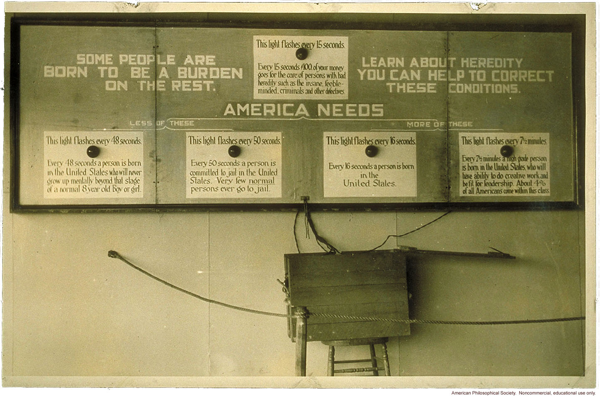

| Autism Information Library |
Then and Now
1926, The Bad Old Days

A popular 1926 exhibit from the American Eugenics movement reads, "Some people are born to be a burden on the rest. Learn about heredity. You can help to correct these conditions." Five panels are displayed, with flashing lights on them.
The top one is captioned, "This light flashes every 15 seconds. Ever 15 seconds $100 of your money goes for the care of persons with bad heredity such as the insane, feeble-minded, criminals, and other defectives."
Under "America needs less of these," there is a light that flashes every 48 seconds -- "Every 48 seconds a person is born in the United states who will never grow up mentally beyond that stage of a normal 8 year old boy or girl" -- and one that flashes every 50 seconds -- "Every 50 seconds a person is committed to jail in the United States. Very few normal persons ever go to jail."
Under "America needs more of these," there is a light that flashes every 16 seconds -- "Every 16 seconds a person is born in the United States", and another that flashes every 7 and a half minutes -- "Every 7 1/2 minutes a high grade person is born in the United States who will have ability to do creative work and be fit for leadership. About 4% of all Americans come within this class."
These flashing-light exhibits were very popular at American eugenics exhibitions, and smaller, more portable versions were made to show everyone how rapidly all these costly and defective people were being born. These days, the eugenics movement is looked upon as a dismal part of American history that some would like to forget and others openly condemn. Few claim to want to repeat it.
2004, These Enlightened Times

A popular webgraphic from an organization devoted to "fighting autism" calls itself "The Autism Clock". It contains a current estimate of the number of autistic people between the ages of 3 and 22 in the American population, the "U.S. Annual Economic Cost", and the time when the next autistic person will be diagnosed. In the background is a pitiful-looking image of a child's face looking upwards.
The website this graphic is attached to describes the cost of "educating" and "caring" for autistic people as a "burden on parents and society", and compares us unfavorably to the less-expensive normal children, reducing human beings to numbers, dollars, and statistics. It promotes the usual cure and prevention to stop this, and urges people to post this graphic all over the web, showing how autistic people are diagnosed every 23 minutes, burdening more and more people...
home | project | library | links | discussion